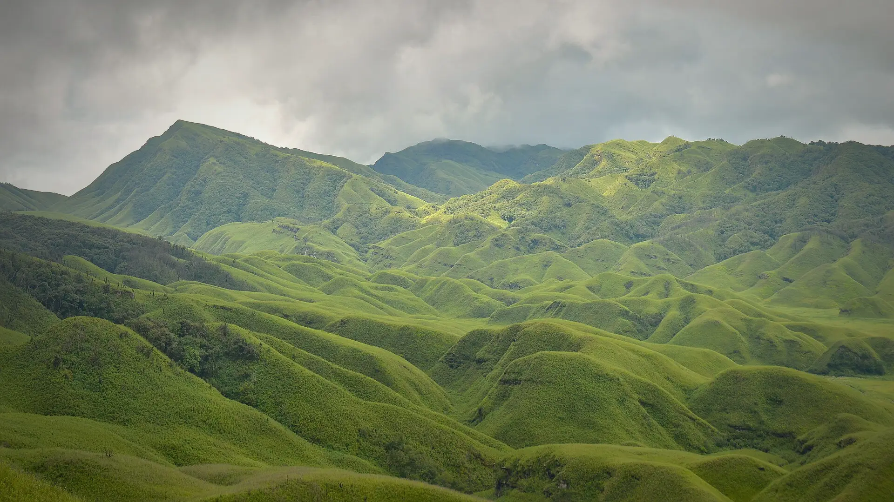

01Day 1 · Viswema · 1,631 mkm 0.1
Up the Viswema side
ILPPermit · For Nagaland
From Viswema, on the highway south of Kohima, a road climbs 8–9 km to Trekker's Point.

Photo: Original: Samudra Bikash Hazarika Derivative work: UnpetitproleX, CC BY-SA 4.0· Kohima, Northeast
The trek in one line, and what you can do with it.
Up from Viswema, a night at the rest house, down to Jakhama: the direction most walkers recommend.
5 stops on the map, then the climb. Scroll the stops and the map follows.
01Day 1 · Viswema · 1,631 mkm 0.1
ILPPermit · For Nagaland
From Viswema, on the highway south of Kohima, a road climbs 8–9 km to Trekker's Point.
01Day 1 · Trekker's Pointkm 7.5
~4kmSteps · Stone, through forest
The road ends at Trekker's Point. From here about 4 km of stone steps climb steeply through the forest to the ridge.
01Day 1 · The valley rimkm 11.8
DzükouBelow · Rolling green hills
Over the ridge, the valley opens below: rolling hills covered in dwarf bamboo, which quickly grows back after the valley's recurring fires.
01Day 1 · Dzükou · 2,452 mkm 13.0
₹100Dorm or camp · Plus ₹100 registration
The rest house sits at about 2,452 m. There is no electricity or mobile network; calls are possible only from the watch tower.
02Day 2 · Jakhama · 1,606 mkm 21.4
HarderRoute · Than the Viswema side
The Jakhama route down is steeper and harder than the way up. It ends at Jakhama, about 2.5 km along the highway from Viswema.
Best in Oct, Mar–Apr.
Dark: the months the trek’s sources call its best. Mid: possible. See all treks in October.
Base prices from 4 operators’ own pages, per person. GST and travel are often extra. Treqz sells nothing.
₹4,950–30,999
The practical things, then the questions people ask.
There are no shops or eateries on the trail. Carry cash for the rest house, food and taxis.
Muddie TrailsFly to Dimapur or take the train from Guwahati. Kohima is 2–2.5 hours on by bus or shared sumo.
Jessie on a JourneyShared taxis to Viswema and Jakhama leave from the Networks Travel AOS bus stop in Kohima. From the Viswema village gate, a taxi to Trekker's Point costs ₹1,000–1,500. Walking the 8 km road adds 2–3 hours.
Jessie on a JourneyCarry packed food from town and at least 2 litres of water for the climb.
Himalayan Dream TreksThe rest house kitchen cooks veg and non-veg meals once a day, and noodles the rest of the time. A small stall sells biscuits, sweets and noodles.
Jessie on a JourneyIn summer, water comes from a stream-fed tank at the campsite. In winter, fetch it from a stream 5 minutes away.
Jessie on a JourneyAbout 21.4 km of walking over 2 days on the trail.
The highest point is 2,452 m, about 1,070 m above the start.
Its sources grade it Moderate.
Oct, Mar–Apr. It is also possible in Nov–Feb, May–Jun, Sep.
₹4,950 to ₹30,999 per person: base prices from 4 operators' own pages. GST and travel are often extra.
There are no shops or eateries on the trail. Carry cash for the rest house, food and taxis.
Thermal inners, Warm jacket and layers, Rain jacket with a hood, Track pants, Full-sleeve T-shirts, Cap or hat, Grippy, water-resistant shoes, Thick socks. The full list is on the 3D page.
It is possible: its sources list Dec–Feb as workable, with snow and cold to plan for.
Its sources grade it Moderate and it takes 2 days on the trail, with a highest point of 2,452 m.
David Scott Trail, Nongriat root bridges, Bailey Trail (Tawang), Green Lake, Dzongri.


Treks in October · Treks in March · Treks in April · Treks in Northeast India · Weekend Treks in India (1–2 Days) · 2 Day Treks in India · Treks in India Under ₹10,000 · Free trek finder · All treks in 3D